Data visualization with ggplot2
Data Carpentry contributors
04-plotting.Rmd## ── Attaching packages ─────────────────────────────────────────────────────────────────────────────────────────── tidyverse 1.3.0 ──## ✓ ggplot2 3.3.2 ✓ purrr 0.3.4
## ✓ tibble 3.0.3 ✓ dplyr 1.0.0
## ✓ tidyr 1.1.0 ✓ stringr 1.4.0
## ✓ readr 1.3.1 ✓ forcats 0.5.0## ── Conflicts ────────────────────────────────────────────────────────────────────────────────────────────── tidyverse_conflicts() ──
## x dplyr::filter() masks stats::filter()
## x dplyr::lag() masks stats::lag()Learning Objectives
- Produce scatter plots, boxplots, and time series plots using ggplot.
- Set universal plot settings.
- Describe what faceting is and apply faceting in ggplot.
- Modify the aesthetics of an existing ggplot plot (including axis labels and color).
- Build complex and customized plots from data in a data frame.
We start by loading the required packages. ggplot2 is included in the tidyverse package.
library(tidyverse)
If not still in the workspace, load the data we saved in the previous lesson.
surveys_complete <- read_csv("/cloud/project/data_output/surveys_complete.csv")
Plotting with ggplot2
ggplot2 is a plotting package that makes it simple to create complex plots from data in a data frame. It provides a more programmatic interface for specifying what variables to plot, how they are displayed, and general visual properties. Therefore, we only need minimal changes if the underlying data change or if we decide to change from a bar plot to a scatter plot. This helps in creating publication quality plots with minimal amounts of adjustments and tweaking.
ggplot2 functions like data in the ‘long’ format, i.e., a column for every dimension, and a row for every observation. Well-structured data will save you lots of time when making figures with ggplot2
ggplot graphics are built step by step by adding new elements. Adding layers in this fashion allows for extensive flexibility and customization of plots.
To build a ggplot, we will use the following basic template that can be used for different types of plots:
ggplot(data = <DATA>, mapping = aes(<MAPPINGS>)) + <GEOM_FUNCTION>()- use the
ggplot()function and bind the plot to a specific data frame using thedataargument
ggplot(data = surveys_complete)
- define a mapping (using the aesthetic (
aes) function), by selecting the variables to be plotted and specifying how to present them in the graph, e.g. as x/y positions or characteristics such as size, shape, color, etc.
ggplot(data = surveys_complete, mapping = aes(x = weight, y = hindfoot_length))
-
add ‘geoms’ – graphical representations of the data in the plot (points, lines, bars).
ggplot2offers many different geoms; we will use some common ones today, including:* `geom_point()` for scatter plots, dot plots, etc. * `geom_boxplot()` for, well, boxplots! * `geom_line()` for trend lines, time series, etc.
To add a geom to the plot use the + operator. Because we have two continuous variables, let’s use geom_point() first:
ggplot(data = surveys_complete, mapping = aes(x = weight, y = hindfoot_length)) + geom_point()
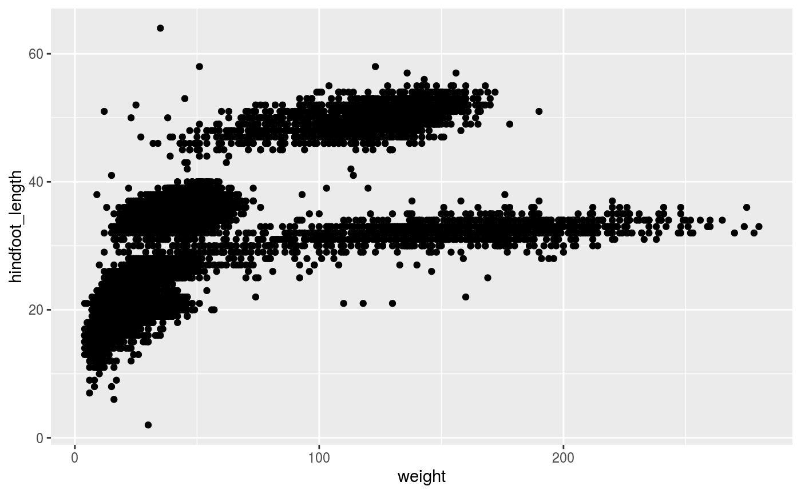
The + in the ggplot2 package is particularly useful because it allows you to modify existing ggplot objects. This means you can easily set up plot templates and conveniently explore different types of plots, so the above plot can also be generated with code like this:
# Assign plot to a variable surveys_plot <- ggplot(data = surveys_complete, mapping = aes(x = weight, y = hindfoot_length)) # Draw the plot surveys_plot + geom_point()
Notes
- Anything you put in the
ggplot()function can be seen by any geom layers that you add (i.e., these are universal plot settings). This includes the x- and y-axis mapping you set up inaes(). - You can also specify mappings for a given geom independently of the mappings defined globally in the
ggplot()function. - The
+sign used to add new layers must be placed at the end of the line containing the previous layer. If, instead, the+sign is added at the beginning of the line containing the new layer,ggplot2will not add the new layer and will return an error message.
# This is the correct syntax for adding layers surveys_plot + geom_point() # This will not add the new layer and will return an error message surveys_plot + geom_point()
Challenge (optional)
Scatter plots can be useful exploratory tools for small datasets. For data sets with large numbers of observations, such as the
surveys_completedata set, overplotting of points can be a limitation of scatter plots. One strategy for handling such settings is to use hexagonal binning of observations. The plot space is tessellated into hexagons. Each hexagon is assigned a color based on the number of observations that fall within its boundaries. To use hexagonal binning withggplot2, first install the R packagehexbinfrom CRAN:install.packages("hexbin") library(hexbin)Then use the
geom_hex()function:surveys_plot + geom_hex()
- What are the relative strengths and weaknesses of a hexagonal bin plot compared to a scatter plot? Examine the above scatter plot and compare it with the hexagonal bin plot that you created.
Building your plots iteratively
Building plots with ggplot2 is typically an iterative process. We start by defining the dataset we’ll use, lay out the axes, and choose a geom:
ggplot(data = surveys_complete, mapping = aes(x = weight, y = hindfoot_length)) + geom_point()

Then, we start modifying this plot to extract more information from it. For instance, we can add transparency (alpha) to avoid overplotting:
ggplot(data = surveys_complete, mapping = aes(x = weight, y = hindfoot_length)) + geom_point(alpha = 0.1)
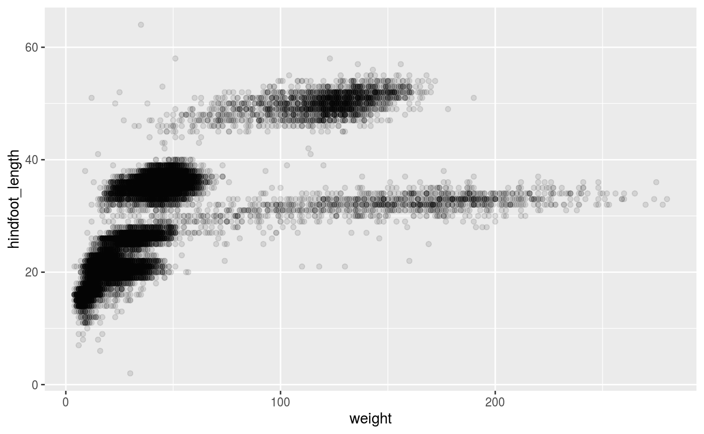
We can also add colors for all the points:
ggplot(data = surveys_complete, mapping = aes(x = weight, y = hindfoot_length)) + geom_point(alpha = 0.1, color = "blue")
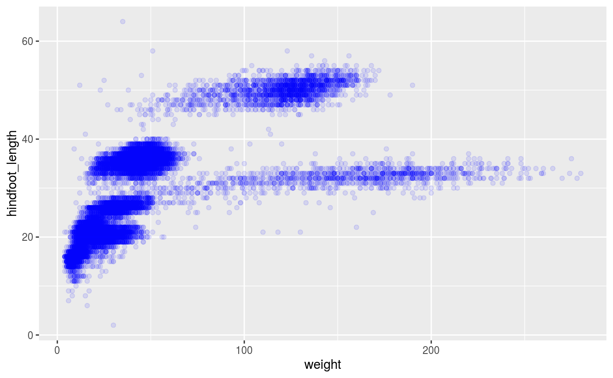
Or to color each species in the plot differently, you could use a vector as an input to the argument color. ggplot2 will provide a different color corresponding to different values in the vector. Here is an example where we color with species_id:
ggplot(data = surveys_complete, mapping = aes(x = weight, y = hindfoot_length)) + geom_point(alpha = 0.1, aes(color = species_id))

We can also specify the colors directly inside the mapping provided in the ggplot() function. This will be seen by any geom layers and the mapping will be determined by the x- and y-axis set up in aes().
ggplot(data = surveys_complete, mapping = aes(x = weight, y = hindfoot_length, color = species_id)) + geom_point(alpha = 0.1)
Notice that we can change the geom layer and colors will be still determined by species_id
ggplot(data = surveys_complete, mapping = aes(x = weight, y = hindfoot_length, color = species_id)) + geom_jitter(alpha = 0.1)
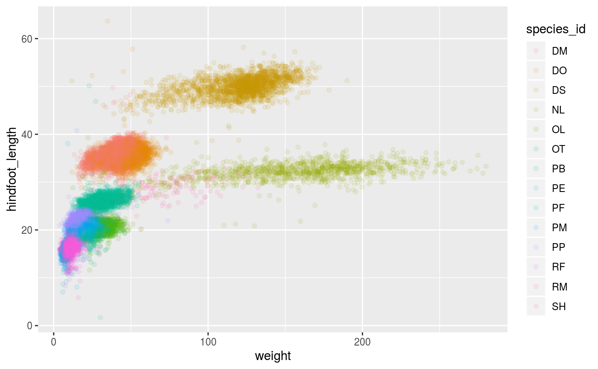
Challenge
Use what you just learned to create a scatter plot of
weightoverspecies_idwith the plot types showing in different colors. Is this a good way to show this type of data?ggplot(data = surveys_complete, mapping = aes(x = species_id, y = weight)) + geom_point(aes(color = plot_type))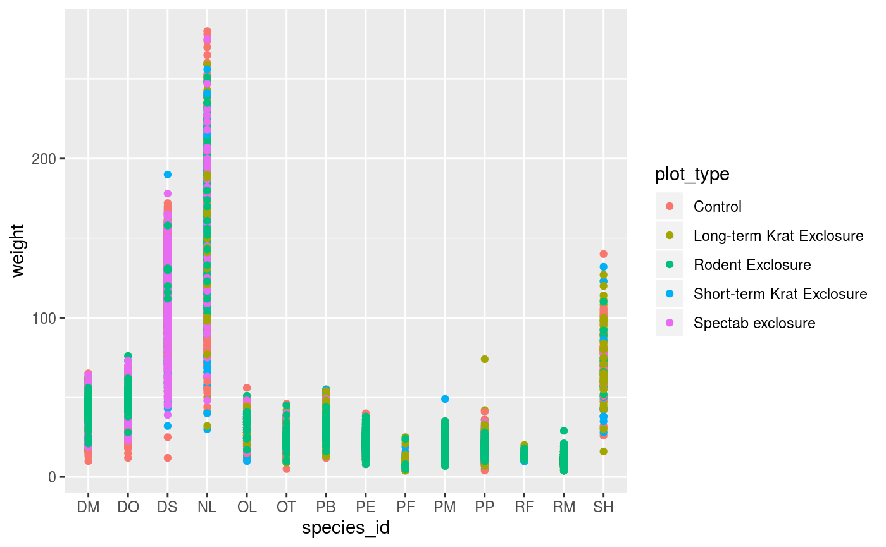
Boxplot
We can use boxplots to visualize the distribution of weight within each species:
ggplot(data = surveys_complete, mapping = aes(x = species_id, y = weight)) + geom_boxplot()
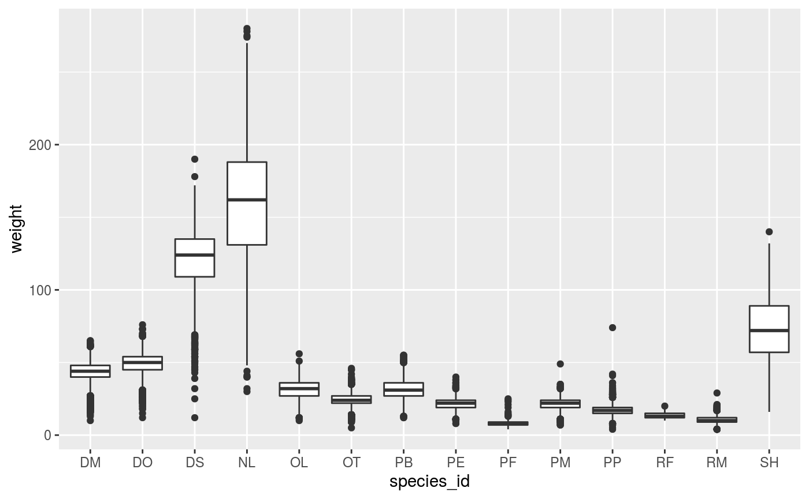
By adding points to boxplot, we can have a better idea of the number of measurements and of their distribution:
ggplot(data = surveys_complete, mapping = aes(x = species_id, y = weight)) + geom_boxplot(alpha = 0) + geom_jitter(alpha = 0.3, color = "tomato")
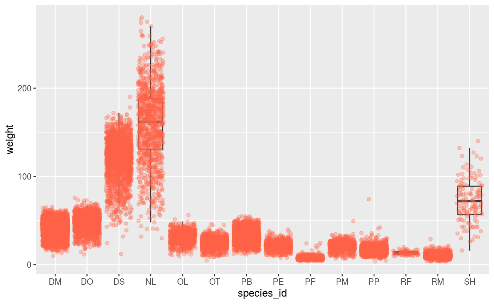
Notice how the boxplot layer is behind the jitter layer? What do you need to change in the code to put the boxplot in front of the points such that it’s not hidden?
Challenges
Boxplots are useful summaries, but hide the shape of the distribution. For example, if the distribution is bimodal, we would not see it in a boxplot. An alternative to the boxplot is the violin plot, where the shape (of the density of points) is drawn.
- Replace the box plot with a violin plot; see
geom_violin().In many types of data, it is important to consider the scale of the observations. For example, it may be worth changing the scale of the axis to better distribute the observations in the space of the plot. Changing the scale of the axes is done similarly to adding/modifying other components (i.e., by incrementally adding commands). Try making these modifications:
- Represent weight on the log10 scale; see
scale_y_log10().So far, we’ve looked at the distribution of weight within species. Try making a new plot to explore the distribution of another variable within each species.
Create a boxplot for
hindfoot_length. Overlay the boxplot layer on a jitter layer to show actual measurements.Add color to the data points on your boxplot according to the plot from which the sample was taken (
plot_id).Hint: Check the class for
plot_id. Consider changing the class ofplot_idfrom integer to factor. Why does this change how R makes the graph?
Plotting time series data
Let’s calculate number of counts per year for each genus. First we need to group the data and count records within each group:
yearly_counts <- surveys_complete %>% count(year, genus)
Time series data can be visualized as a line plot with years on the x axis and counts on the y axis:
ggplot(data = yearly_counts, mapping = aes(x = year, y = n)) + geom_line()

Unfortunately, this does not work because we plotted data for all the genera together. We need to tell ggplot to draw a line for each genus by modifying the aesthetic function to include group = genus:
ggplot(data = yearly_counts, mapping = aes(x = year, y = n, group = genus)) + geom_line()
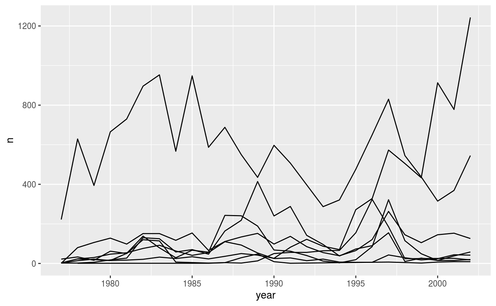
We will be able to distinguish genera in the plot if we add colors (using color also automatically groups the data):
ggplot(data = yearly_counts, mapping = aes(x = year, y = n, color = genus)) + geom_line()
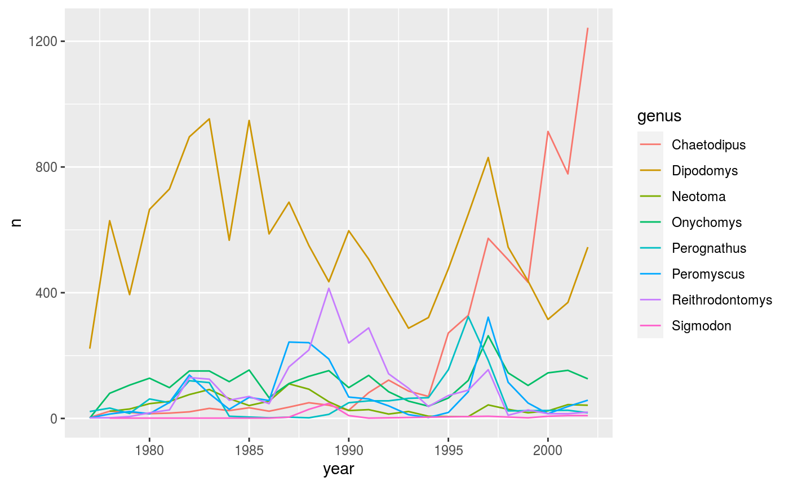
Faceting
ggplot2 has a special technique called faceting that allows the user to split one plot into multiple plots based on a factor included in the dataset.
There are two types of facet functions:
-
facet_wrap()arranges a one-dimensional sequence of panels to allow them to cleanly fit on one page. -
facet_grid()allows you to form a matrix of rows and columns of panels.
Both geometries allow to to specify faceting variables specified within vars(). For example, facet_wrap(facets = vars(facet_variable)) or facet_grid(rows = vars(row_variable), cols = vars(col_variable)).
Let’s start by using facet_wrap() to make a time series plot for each species:
ggplot(data = yearly_counts, mapping = aes(x = year, y = n)) + geom_line() + facet_wrap(facets = vars(genus))
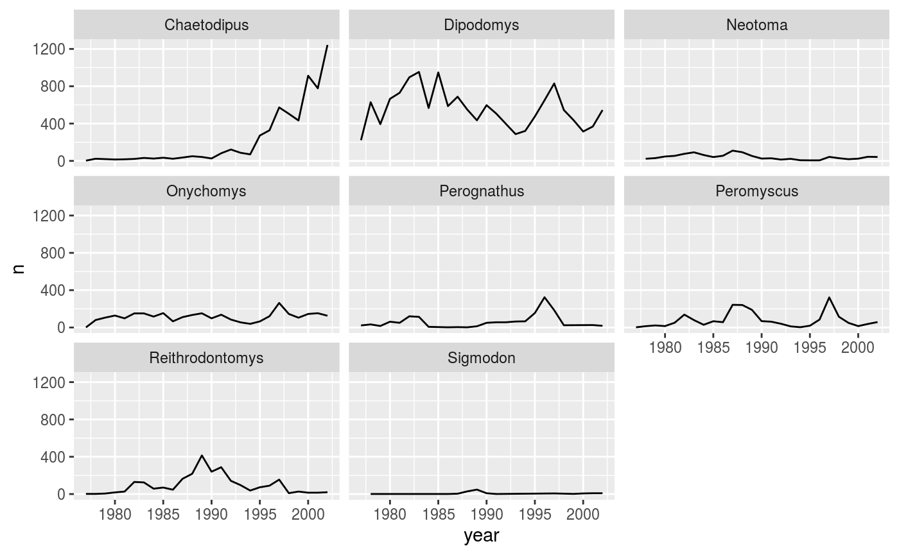
Now we would like to split the line in each plot by the sex of each individual measured. To do that we need to make counts in the data frame grouped by year, species_id, and sex:
yearly_sex_counts <- surveys_complete %>% count(year, genus, sex)
We can now make the faceted plot by splitting further by sex using color (within each panel):
ggplot(data = yearly_sex_counts, mapping = aes(x = year, y = n, color = sex)) + geom_line() + facet_wrap(facets = vars(genus))
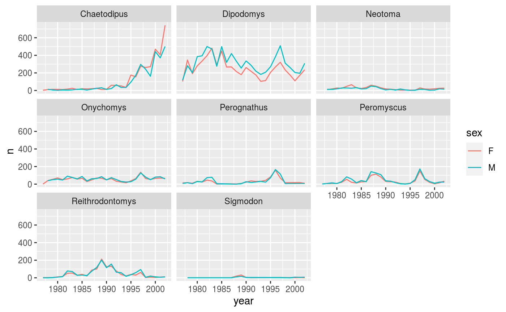
Now let’s use facet_grid() to control how panels are organised by both rows and columns:
ggplot(data = yearly_sex_counts, mapping = aes(x = year, y = n, color = sex)) + geom_line() + facet_grid(rows = vars(sex), cols = vars(genus))
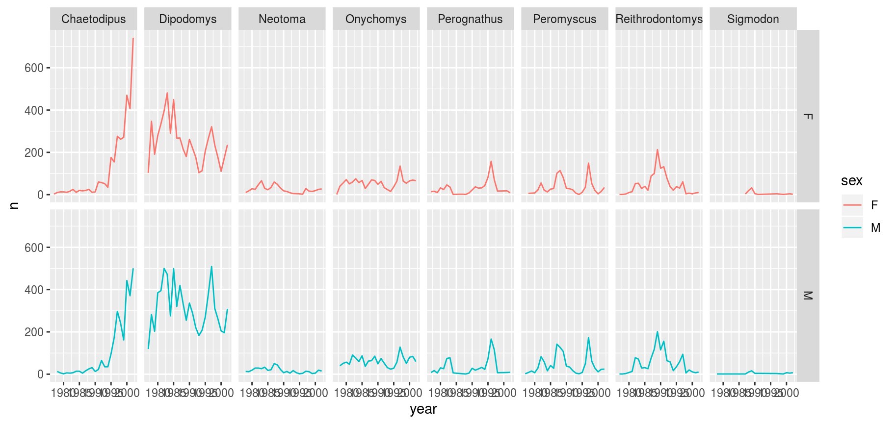
You can also organise the panels only by rows (or only by columns):
# One column, facet by rows ggplot(data = yearly_sex_counts, mapping = aes(x = year, y = n, color = sex)) + geom_line() + facet_grid(rows = vars(genus))
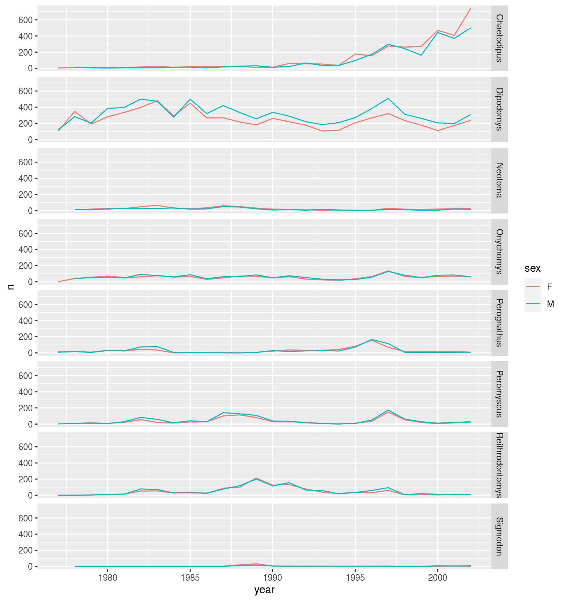
# One row, facet by column ggplot(data = yearly_sex_counts, mapping = aes(x = year, y = n, color = sex)) + geom_line() + facet_grid(cols = vars(genus))
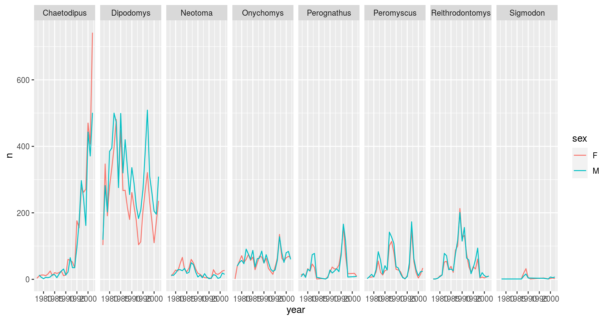
Note: In earlier versions of ggplot2 you need to use an interface using formulas to specify how plots are faceted (and this is still supported in new versions). The equivalent syntax is:
# facet wrap facet_wrap(vars(genus)) # new facet_wrap(~ genus) # old # grid on both rows and columns facet_grid(rows = vars(genus), cols = vars(sex)) # new facet_grid(genus ~ sex) # old # grid on rows only facet_grid(rows = vars(genus)) # new facet_grid(genus ~ .) # old # grid on columns only facet_grid(cols = vars(genus)) # new facet_grid(. ~ genus) # old
ggplot2 themes
Usually plots with white background look more readable when printed. Every single component of a ggplot graph can be customized using the generic theme() function, as we will see below. However, there are pre-loaded themes available that change the overall appearance of the graph without much effort.
For example, we can change our previous graph to have a simpler white background using the theme_bw() function:
ggplot(data = yearly_sex_counts, mapping = aes(x = year, y = n, color = sex)) + geom_line() + facet_wrap(vars(genus)) + theme_bw()
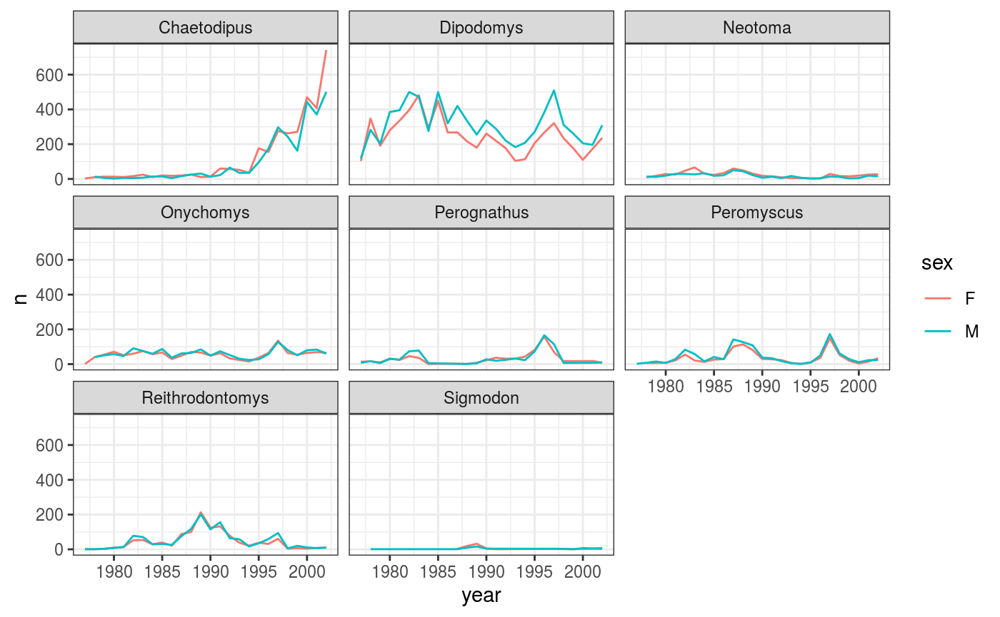
In addition to theme_bw(), which changes the plot background to white, ggplot2 comes with several other themes which can be useful to quickly change the look of your visualization. The complete list of themes is available at https://ggplot2.tidyverse.org/reference/ggtheme.html. theme_minimal() and theme_light() are popular, and theme_void() can be useful as a starting point to create a new hand-crafted theme.
The ggthemes package provides a wide variety of options. The ggplot2 extensions website provides a list of packages that extend the capabilities of ggplot2, including additional themes.
Challenge
Use what you just learned to create a plot that depicts how the average weight of each species changes through the years.
yearly_weight <- surveys_complete %>% group_by(year, species_id) %>% summarize(avg_weight = mean(weight))## `summarise()` regrouping output by 'year' (override with `.groups` argument)ggplot(data = yearly_weight, mapping = aes(x=year, y=avg_weight)) + geom_line() + facet_wrap(vars(species_id)) + theme_bw()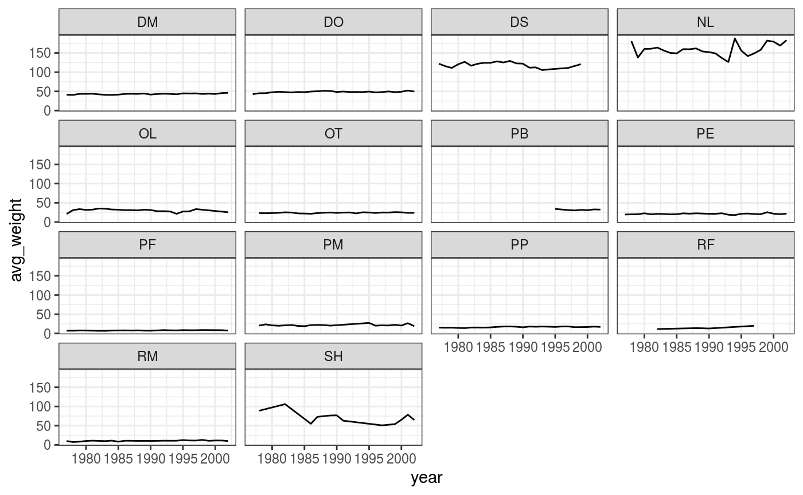
Customization
Take a look at the ggplot2 cheat sheet, and think of ways you could improve the plot.
Now, let’s change names of axes to something more informative than ‘year’ and ‘n’ and add a title to the figure:
ggplot(data = yearly_sex_counts, mapping = aes(x = year, y = n, color = sex)) + geom_line() + facet_wrap(vars(genus)) + labs(title = "Observed genera through time", x = "Year of observation", y = "Number of individuals") + theme_bw()
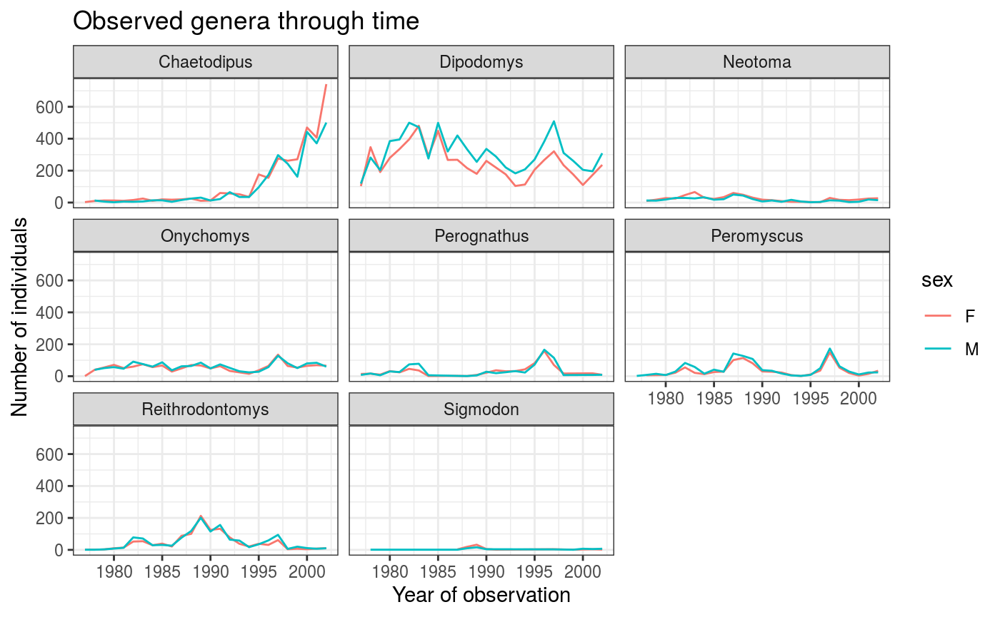
The axes have more informative names, but their readability can be improved by increasing the font size. This can be done with the generic theme() function:
ggplot(data = yearly_sex_counts, mapping = aes(x = year, y = n, color = sex)) + geom_line() + facet_wrap(vars(genus)) + labs(title = "Observed genera through time", x = "Year of observation", y = "Number of individuals") + theme_bw() + theme(text=element_text(size = 16))
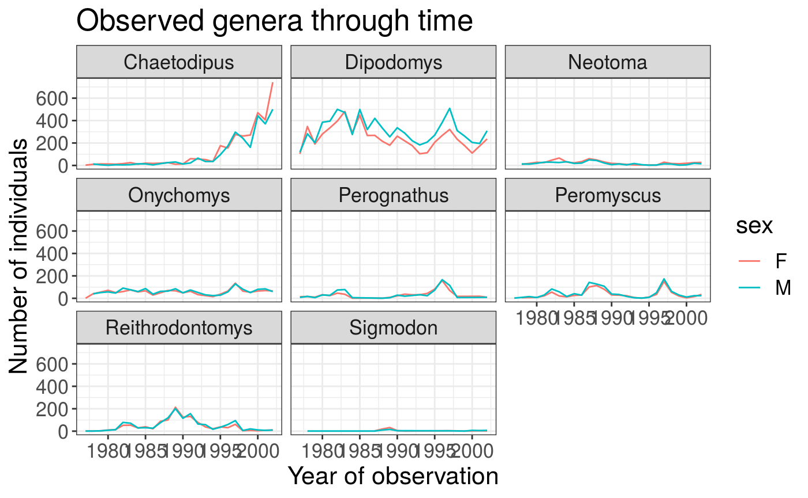
Note that it is also possible to change the fonts of your plots. If you are on Windows, you may have to install the extrafont package, and follow the instructions included in the README for this package.
After our manipulations, you may notice that the values on the x-axis are still not properly readable. Let’s change the orientation of the labels and adjust them vertically and horizontally so they don’t overlap. You can use a 90-degree angle, or experiment to find the appropriate angle for diagonally oriented labels:
ggplot(data = yearly_sex_counts, mapping = aes(x = year, y = n, color = sex)) + geom_line() + facet_wrap(vars(genus)) + labs(title = "Observed genera through time", x = "Year of observation", y = "Number of individuals") + theme_bw() + theme(axis.text.x = element_text(colour = "grey20", size = 12, angle = 90, hjust = 0.5, vjust = 0.5), axis.text.y = element_text(colour = "grey20", size = 12), text = element_text(size = 16))
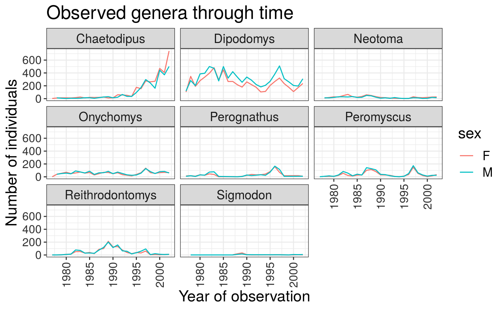
If you like the changes you created better than the default theme, you can save them as an object to be able to easily apply them to other plots you may create:
# define custom theme grey_theme <- theme(axis.text.x = element_text(colour = "grey20", size = 12, angle = 90, hjust = 0.5, vjust = 0.5), axis.text.y = element_text(colour = "grey20", size = 12), text = element_text(size = 16)) # create a boxplot with the new theme ggplot(surveys_complete, aes(x = species_id, y = hindfoot_length)) + geom_boxplot() + grey_theme
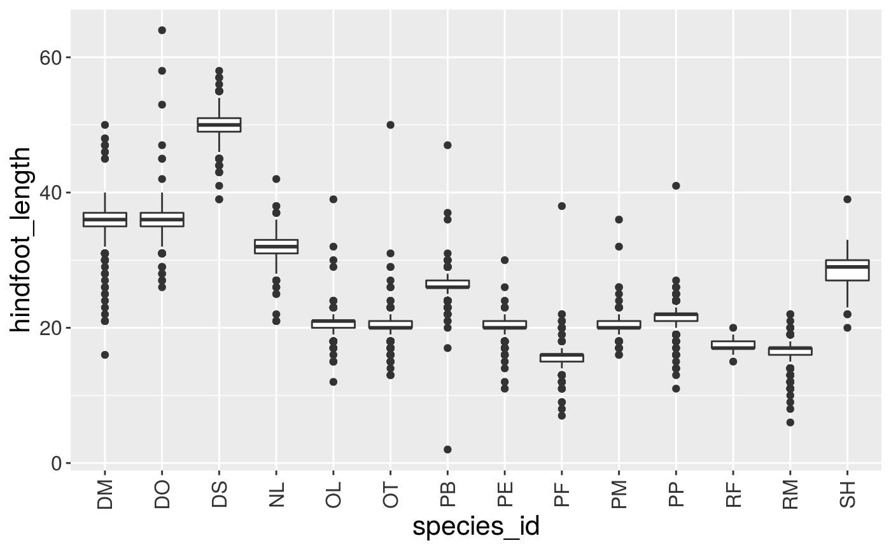
Challenge
With all of this information in hand, please take another five minutes to either improve one of the plots generated in this exercise or create a beautiful graph of your own. Use the RStudio
ggplot2cheat sheet for inspiration. Here are some ideas:
- See if you can change the thickness of the lines.
- Can you find a way to change the name of the legend? What about its labels?
- Try using a different color palette (see http://www.cookbook-r.com/Graphs/Colors_(ggplot2)/).
Arranging and exporting plots
Faceting is a great tool for splitting one plot into multiple plots, but sometimes you may want to produce a single figure that contains multiple plots using different variables or even different data frames. The gridExtra package allows us to combine separate ggplots into a single figure using grid.arrange():
install.packages("gridExtra")
library(gridExtra) spp_weight_boxplot <- ggplot(data = surveys_complete, mapping = aes(x = genus, y = weight)) + geom_boxplot() + xlab("Genus") + ylab("Weight (g)") + scale_y_log10() + theme(axis.text.x = element_text(angle = 45, hjust = 1)) spp_count_plot <- ggplot(data = yearly_counts, mapping = aes(x = year, y = n, color = genus)) + geom_line() + xlab("Year") + ylab("Abundance") grid.arrange(spp_weight_boxplot, spp_count_plot, ncol = 2, widths = c(4, 6))
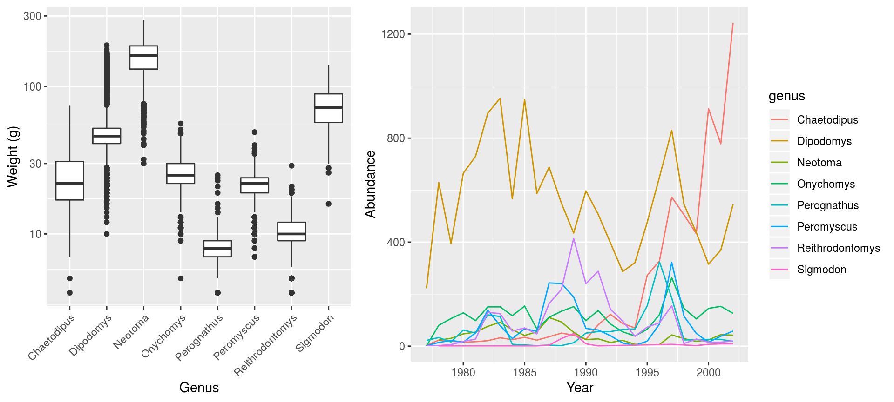
In addition to the ncol and nrow arguments, used to make simple arrangements, there are tools for constructing more complex layouts.
After creating your plot, you can save it to a file in your favorite format. The Export tab in the Plot pane in RStudio will save your plots at low resolution, which will not be accepted by many journals and will not scale well for posters.
Instead, use the ggsave() function, which allows you easily change the dimension and resolution of your plot by adjusting the appropriate arguments (width, height and dpi).
Make sure you have the fig_output/ folder in your working directory.
my_plot <- ggplot(data = yearly_sex_counts, mapping = aes(x = year, y = n, color = sex)) + geom_line() + facet_wrap(vars(species_id)) + labs(title = "Observed genera through time", x = "Year of observation", y = "Number of individuals") + theme_bw() + theme(axis.text.x = element_text(colour = "grey20", size = 12, angle = 90, hjust = 0.5, vjust = 0.5), axis.text.y = element_text(colour = "grey20", size = 12), text=element_text(size = 16)) ggsave("/cloud/project/fig_output/yearly_sex_counts.png", my_plot, width = 15, height = 10) # This also works for grid.arrange() plots combo_plot <- grid.arrange(spp_weight_boxplot, spp_count_plot, ncol = 2, widths = c(4, 6)) ggsave("/cloud/project/fig_output/combo_plot_abun_weight.png", combo_plot, width = 10, dpi = 300)
Note: The parameters width and height also determine the font size in the saved plot.